American cockroach · 3.5 cm
Dart and freeze
Glossy veined wings, the pale-rimmed pronotum and legs bristling with spines. Feet stay planted in a tripod gait while the body moves over them.
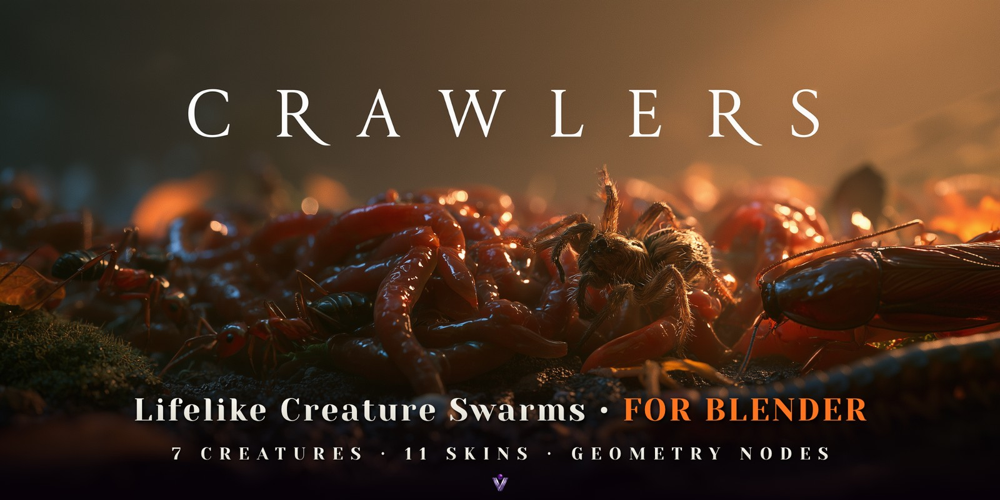
Every creature at its true size and speed, from a 1.2 cm ant to a 90 cm snake.
Planted feet and real gaits, worms that pile up, snakes in S-curves.
Pure Geometry Nodes: one simulation zone, every mode a modifier input.
A spider is loose on this page. Move your cursor and it follows you.
Rebuilt from photographs
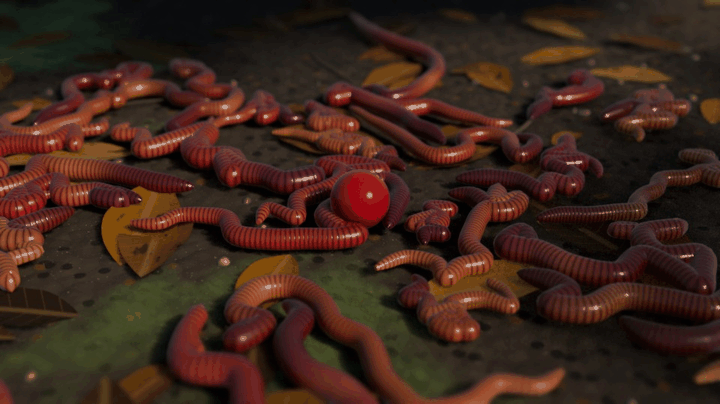
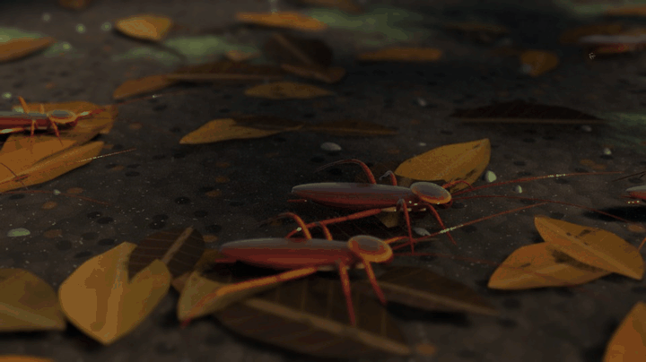
American cockroach · 3.5 cm
Glossy veined wings, the pale-rimmed pronotum and legs bristling with spines. Feet stay planted in a tripod gait while the body moves over them.
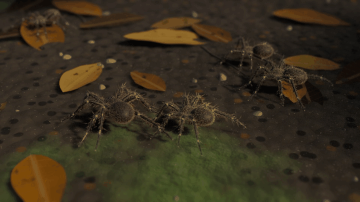
Wolf spider · 1.8 cm body
Furred all over, with pale rings at the joints and eight legs in alternating tetrapods. They keep their distance, wait in ambush, then run.
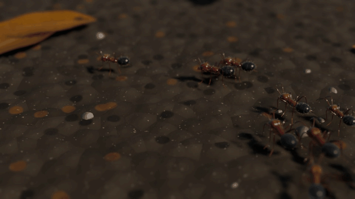
Ant · 1.2 cm
Fine golden hairs and an iridescent gaster. Ants march in file, keep their spacing and follow the trail you draw.
90 cm, slithering in S-curves.
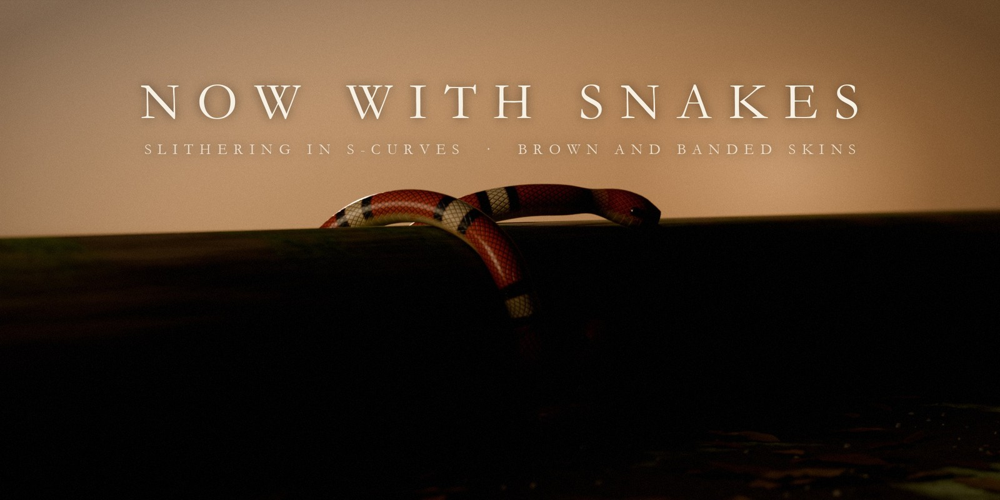
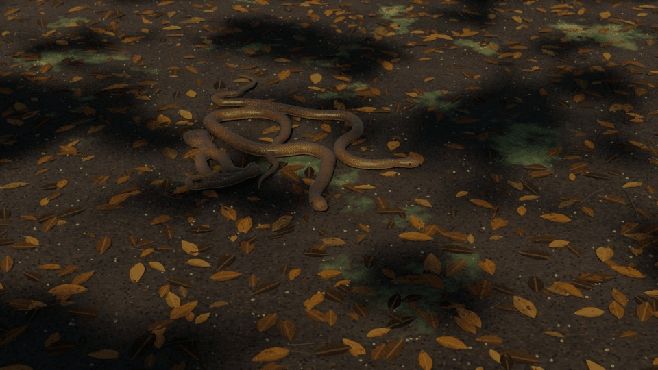
Snakes glide in wide S-curves with the body on the head's track and flick their forked tongues. They keep a little room around their bodies, so they never pass through each other. Two skins: Brown Snake and Banded Snake, with overlapping scales and wide belly plates.
Logs, rocks, walls, each other.
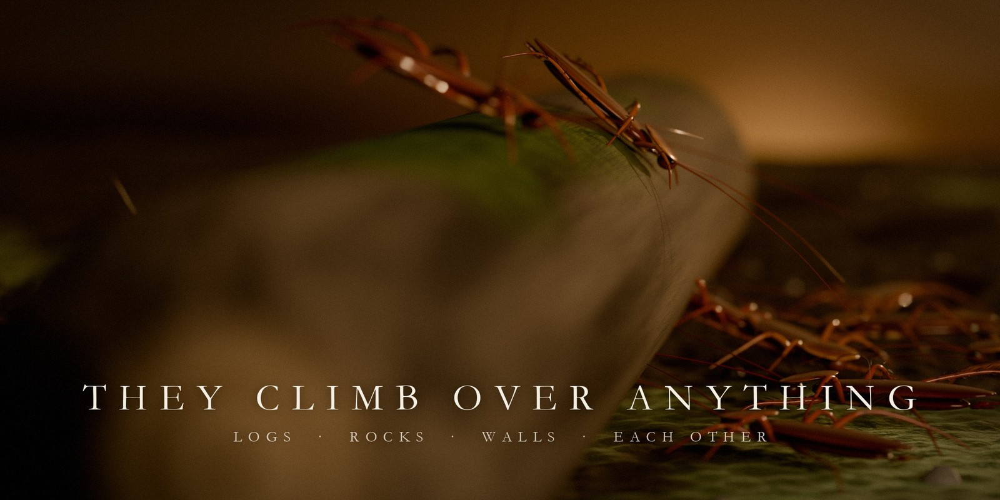
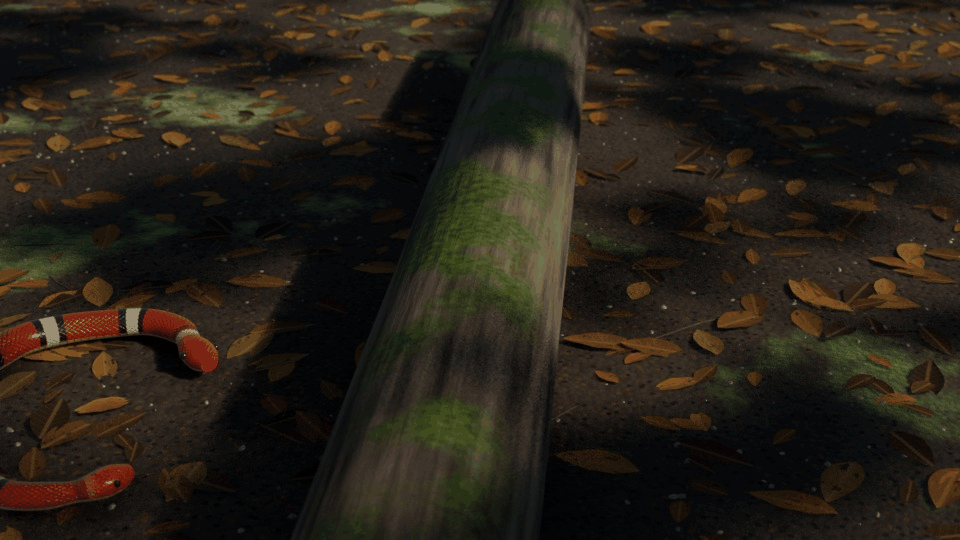
Select the meshes they should climb and the swarm treats them as terrain: up and over, overhangs included, and down the far side. Worms climb each other into writhing piles.
Pick them by their picture.
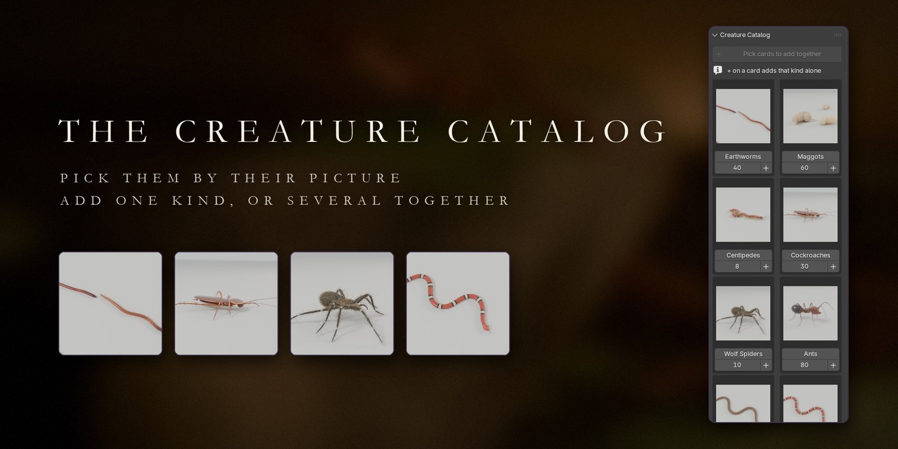
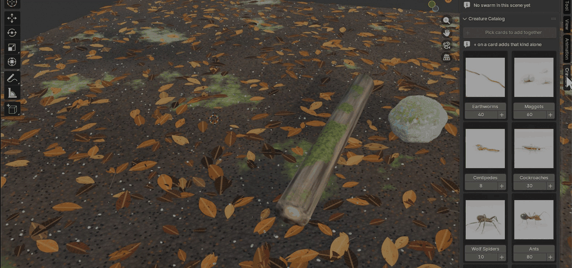
Click + on a card to add one kind, or pick several cards and click Add Together: one swarm per kind, side by side, all heading for one shared target.
Drag over your scene. The swarm walks your stroke.
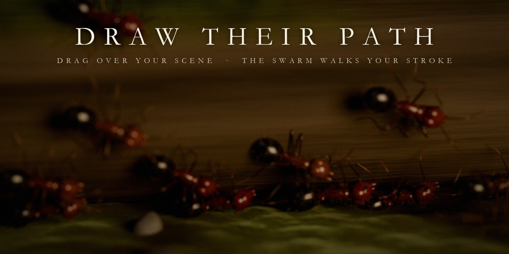
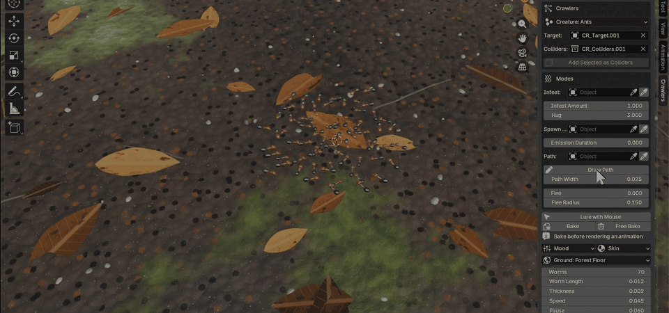
Click Draw Path and drag over anything in your scene. End the stroke near the start and they walk it round and round: a living ant trail in seconds.
Lead the swarm with your cursor.
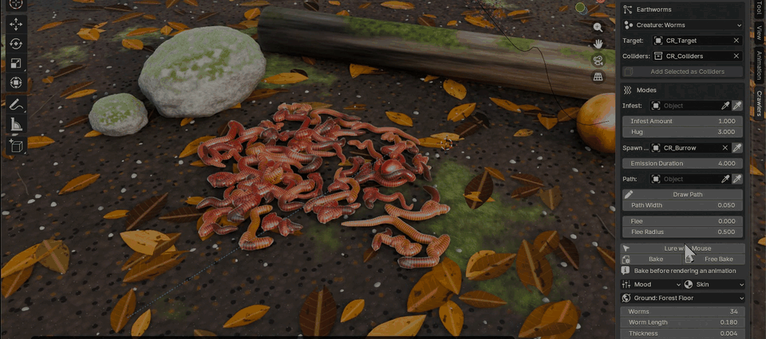
Press Play and the swarm chases your cursor over every surface, piling up where it stops. Hold the left mouse button to blast it apart.
Viewport clips were recorded frame by frame, partly at double speed. Live speed depends on the creature count and your hardware.
Seven creatures, eleven skins, four grounds and two demo scenes.
Hunt any object: a berry, a lantern, a hand.
Infest any mesh and cover it.
Emerge from a burrow, a drain or a crack.
Flee from a light the moment it comes on.
Burst with one keyframe.
Path and Lure, drawn or led by mouse.
Add Ground: Forest Floor, Wet Concrete, Old Planks and Stone Tiles, with real relief.
Eleven skins matched to photographs, plus Abyss Glow, Toxic and Leech.
Crawlers add-on for Blender 5.0+, tested on 5.0.1 and 5.2.0 LTS.
Forest Floor and The Undercroft demo scenes.
Documentation for every mode and setting.
GPL-3.0-or-later code and assets.
Get Crawlers